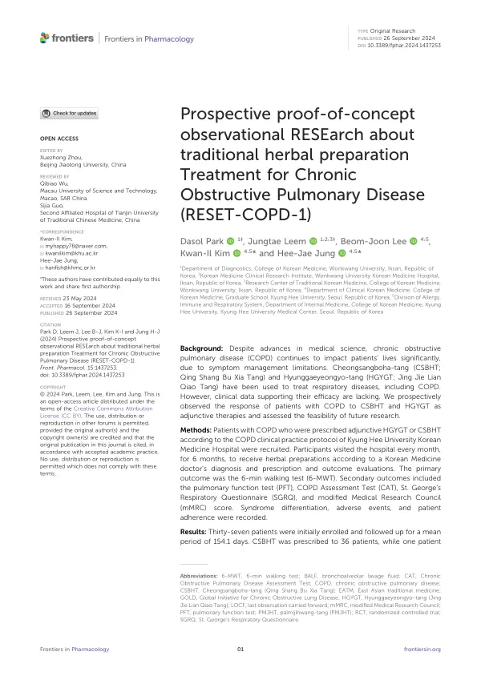

Prospective proof-of-concept observational RESEarch about traditional herbal preparation Treatment for Chronic Obstructive Pulmonary Disease (RESET-COPD-1)
Park D, Leem J, Lee BJ, Kim KI, Jung HJ
Frontiers in Pharmacology 15:1437253

첫 장 · 오픈액세스First page · open access
논문 소개Summary
만성폐쇄성폐질환은 약을 써도 증상 관리에 한계가 남는 병입니다. 청상보하탕과 형개연교탕은 호흡기질환에 오래 써 온 처방이지만 이를 뒷받침할 임상 자료는 없었습니다. 이 연구는 경희대학교한방병원의 진료 프로토콜대로 한약을 함께 쓴 환자들이 어떻게 되는지를 6개월 동안 앞을 향해 지켜본 개념증명 관찰연구입니다.
37명이 등록했고 평균 154.1일 동안 따라갔습니다. 한 달에 한 번 병원에 와서 한의사의 진단에 따라 처방을 받고 평가를 받았습니다. 36명에게 청상보하탕이 처방되었습니다. 참여자는 남성이 30명, 평균 69.5세였고 기관지확장제 투여 후 1초간 노력날숨량 예측치가 평균 56.1%로 GOLD 2단계가 23명, 3단계가 11명이었습니다. 두 명을 뺀 전원이 기관지확장제 흡입기를 쓰고 있었습니다. 일차 평가변수는 6분 걷기 검사였습니다.
일차 평가변수는 움직이지 않았습니다. 6분 걷기 거리는 362.7미터에서 369.6미터로 통계적으로 유의한 차이가 없었습니다. 대신 만성폐쇄성폐질환 평가검사 점수가 17.0에서 12.5로, 호흡곤란 시각아날로그척도가 47.5에서 28.4로 낮아졌고 다섯 번째 방문부터 유의했습니다. 반면 세인트조지 호흡기 설문과 수정 영국의학연구위원회 호흡곤란 등급은 유의하게 바뀌지 않았습니다. 폐기능검사는 코로나19 유행으로 대부분 시행하지 못해 계획한 시점을 모두 마친 사람이 한 명뿐이었습니다.
안전성에서는 일곱 명이 중도 탈락했고 가벼운 소화불량 두 명, 가벼운 두통 한 명이 있었으며 중대한 이상반응은 없었습니다.
저자들이 밝힌 한계는 분명합니다. 대조군이 없는 관찰연구여서 좋아진 것이 약 때문인지 다른 요인이나 우연 때문인지 가릴 수 없고, 표본이 적어 비뚤림의 여지가 큽니다. 그래도 이 연구의 자리는 있습니다. 앞선 한약 관찰연구들이 12주였던 데 비해 6개월을 지켜보았고, 걷기 거리와 증상 점수, 호흡곤란, 삶의 질을 함께 재면서 변증 설문으로 환자의 유형 변화까지 따라갔습니다. 무엇을 얼마 동안 써야 하는지를 묻는 다음 무작위 대조시험이 딛고 설 자리를 만든 셈입니다.
Chronic obstructive pulmonary disease leaves limits on symptom control even under drug treatment. Cheongsangboha-tang and Hyunggaeyeongyo-tang have long been prescribed for respiratory disease, but clinical data supporting them were absent. This proof-of-concept observational study followed, prospectively and for six months, what happened to patients given these herbal preparations alongside conventional care under the COPD practice protocol of Kyung Hee University Korean Medicine Hospital.
Thirty-seven patients enrolled and were followed for a mean of 154.1 days, visiting monthly for prescription by a Korean medicine doctor and for assessment. Thirty-six received Cheongsangboha-tang. Thirty participants were male, mean age 69.5 years, with a mean post-bronchodilator FEV1 of 56.1% predicted — 23 at GOLD stage 2 and 11 at stage 3. All but two were using bronchodilator inhalers. The primary outcome was the six-minute walking test.
The primary outcome did not move. Six-minute walking distance went from 362.7 to 369.6 metres, with no statistically significant difference. The COPD Assessment Test score fell from 17.0 to 12.5 and the visual analogue scale for dyspnoea from 47.5 to 28.4, both significant from the fifth visit. The St George's Respiratory Questionnaire and the modified Medical Research Council dyspnoea grade, by contrast, did not change significantly. Pulmonary function testing was largely prevented by the COVID-19 pandemic; only one patient completed every scheduled test.
On safety, seven patients dropped out, two had mild dyspepsia and one mild headache, and no serious adverse effects occurred.
The authors' limitations are plain. Without a control group it is not possible to separate the medicine from other factors or coincidence, and the small sample leaves room for bias. The study still holds its place. Previous prospective observational work on herbal preparations in COPD ran twelve weeks; this ran six months, measured walking distance, symptom scores, dyspnoea and quality of life together, and tracked changes in patients' pattern classification with a syndrome differentiation questionnaire. It builds the ground on which a randomised trial asking what to prescribe, and for how long, can stand.
인용Cite
Park D, Leem J, Lee BJ, Kim KI, Jung HJ. Prospective proof-of-concept observational RESEarch about traditional herbal preparation Treatment for Chronic Obstructive Pulmonary Disease (RESET-COPD-1). Frontiers in Pharmacology. 2024;15:1437253. doi:10.3389/fphar.2024.1437253